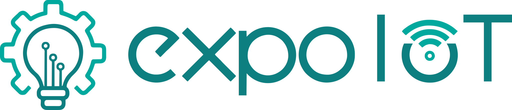

ExpoIoT 2026 · UFC Campus Sobral
Um espaço onde tecnologia universitária ganha presença, troca e impacto.
A ExpoIoT reúne projetos, pessoas e experiências para mostrar como a universidade transforma conhecimento técnico em soluções, protótipos, pesquisas e aprendizados aplicados.
Sobre o evento
Mais do que uma mostra, a ExpoIoT é um ambiente de circulação de ideias.
A ExpoIoT é um evento universitário dedicado à exposição de projetos nas áreas de Internet das Coisas, robótica, sistemas embarcados, hardware, software, automação e tecnologias digitais, valorizando o que nasce, evolui e ganha forma dentro da universidade.
Objetivos
O evento foi pensado para incentivar criação, apresentação e discussão.
Cada bloco da ExpoIoT contribui para aproximar teoria e prática, fortalecer a produção estudantil e ampliar as conexões entre pessoas, cursos, laboratórios e projetos.
Expor projetos reais
A ExpoIoT abre espaço para protótipos, pesquisas e soluções em desenvolvimento ganharem visibilidade dentro da universidade.
Transformar teoria em prática
Conceitos de programação, eletrônica, sensores, redes, inteligência artificial e sistemas embarcados aparecem em aplicações concretas.
Criar um espaço comum
O evento reúne estudantes, professores, grupos de estudo, projetos de extensão e laboratórios em um mesmo ambiente de troca.
Incentivar inovação contínua
A ExpoIoT valoriza versões em evolução, protótipos e provas de conceito como parte natural do processo de construir tecnologia.
Narrativa
A experiência vai sendo construída em camadas ao longo do evento.
A cada apresentação, conversa e demonstração, a ExpoIoT mostra como projetos acadêmicos podem se tornar experiências coletivas de aprendizado.
O que é
Um evento universitário pensado para dar forma pública ao que está sendo criado.
A ExpoIoT é um evento voltado à exposição, apresentação e valorização de projetos nas áreas de Internet das Coisas, robótica, sistemas embarcados, hardware, software, automação e tecnologias relacionadas.
Mais do que uma mostra, ela funciona como um espaço de encontro entre estudantes, professores, pesquisadores, grupos de estudo, laboratórios e pessoas interessadas em tecnologia.
Teoria + prática
Conhecimentos vistos em sala passam a existir em projetos concretos.
Na ExpoIoT, conteúdos como programação, eletrônica, sensores, redes, controle, banco de dados e inteligência artificial deixam de ser tópicos isolados e passam a aparecer conectados em soluções reais.
Isso ajuda os estudantes a perceberem como diferentes áreas da computação e da engenharia se articulam na construção de sistemas completos.
Espaço comum
Quando projetos ocupam o mesmo ambiente, o aprendizado deixa de ser isolado.
Um evento como a ExpoIoT transforma experiências individuais em vivências coletivas. Um estudante conhece o trabalho do outro, descobre novas ferramentas, percebe aplicações diferentes para os mesmos conceitos e amplia repertório.
Uma conversa pode virar colaboração, uma demonstração pode gerar pesquisa e um protótipo simples pode inspirar soluções mais robustas no futuro.
Formação dos estudantes
Apresentar também é aprender: comunicar, defender ideias e receber feedback.
Quem participa da ExpoIoT precisa explicar o problema, justificar escolhas, demonstrar o funcionamento do projeto e responder perguntas do público. Isso fortalece comunicação técnica, organização e confiança.
Além disso, a experiência ajuda a construir portfólio, registrar projetos e mostrar envolvimento com atividades práticas para além das disciplinas formais.
Impacto acadêmico
A universidade aparece como espaço de criação, colaboração e inovação aplicada.
Para a universidade, a ExpoIoT fortalece a cultura de inovação, aproxima cursos e laboratórios e mostra de forma acessível a produção acadêmica em tecnologia.
Para grupos, laboratórios e projetos, o evento ajuda na divulgação, no recrutamento de novos membros e no surgimento de parcerias técnicas entre diferentes frentes.
Última edição
Projetos, pessoas e protótipos ocupando o mesmo espaço de troca.
Ao reunir apresentações, demonstrações, visitas e conversas em um mesmo ambiente, a ExpoIoT cria um espaço comum onde o conhecimento deixa de ficar restrito à sala de aula ou ao laboratório.
Esse encontro ajuda a universidade a tornar visível sua produção, aproxima novos estudantes da tecnologia e fortalece uma cultura de experimentação, colaboração e melhoria contínua.
Galeria
Registros visuais que acompanham a trajetória da ExpoIoT.
Uma seleção de imagens para mostrar o ritmo do evento sem transformar a página em uma sequência de banners grandes demais.
Organização
Um evento ligado ao Nuclic e à UFC Sobral, com foco em formação e experimentação.
A ExpoIoT é uma iniciativa do Nuclic, o Laboratório de Sistemas de Computação da UFC Sobral, com atuação em Internet das Coisas, inteligência artificial, robótica, sistemas embarcados e computação aplicada.
Ao promover esse encontro, o laboratório amplia o alcance das atividades de ensino, pesquisa e extensão e ajuda a consolidar a universidade como espaço de criação, colaboração e transformação social por meio da tecnologia.

Parcerias
Formas de apoio que fortalecem o evento e ampliam sua visibilidade.
A ExpoIoT também pode se conectar a empresas e instituições parceiras por meio de ações de divulgação, apoio a eventos e atividades formativas.
Divulgação institucional
Presença da marca parceira nos canais e materiais de comunicação do evento.
- Posts patrocinados nas redes sociais do Nuclic
- Inserção da marca em banners do site para apoiadores
- Posts patrocinados e destaque institucional no site
Apoio a eventos
Parceria voltada à promoção conjunta de ações ligadas à ExpoIoT e ao Nuclic.
- Divulgação de eventos da empresa na página do evento
- Ações conjuntas de comunicação com o Nuclic
- Fortalecimento da presença da marca junto à comunidade acadêmica
Capacitações em parceria
Possibilidade de realizar atividades formativas construídas em conjunto com a empresa.
- Minicursos, oficinas ou palestras em parceria
- Atividades alinhadas à realidade da empresa e do laboratório
- Aproximação entre estudantes, equipe do Nuclic e mercado
Contato
Vamos conversar?
Preencha o formulário e a equipe do Nuclic entrará em contato para conversar sobre a parceria.
Contato direto: nuclic@sobral.ufc.br